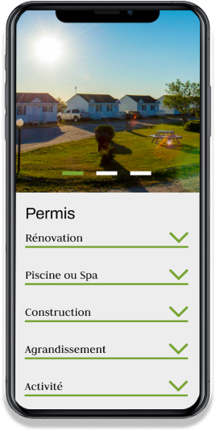
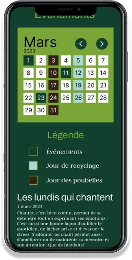
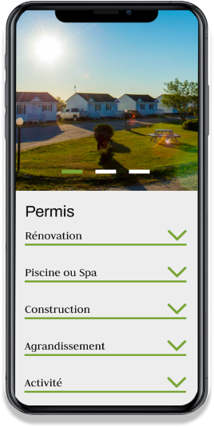
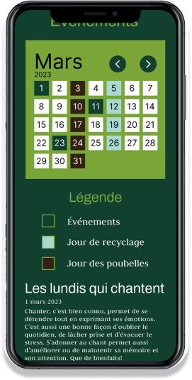

Pour ce projet, j'ai refait un site de A à Z en commençant par le design, pour ensuite le programmer.
Pour ce projet, j'ai commencé par rechercher une esthétique qui s'inspire de la nature tout en restant professionnelle.
Ce site m'a permis d'apprendre comment concevoir un design fonctionnel pour la programmation web, ainsi que quelques composantes JavaScript.
Grâce à VS Code et GitHub, j’ai développé cette page avec HTML, CSS et JavaScript. L’entièreté du site est responsive et comporte des animations en scrolly.
Exemple de sctructure HTML
Exemple de sctructure SCSS
Exemple de JavaScript
 


